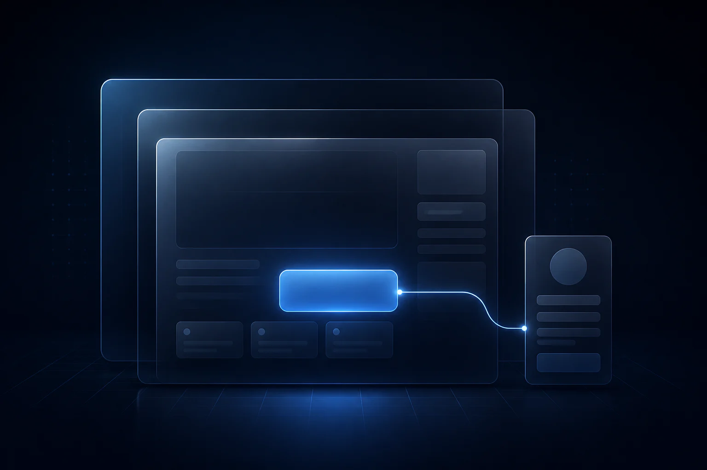
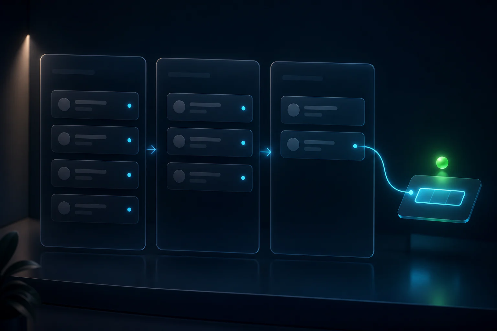
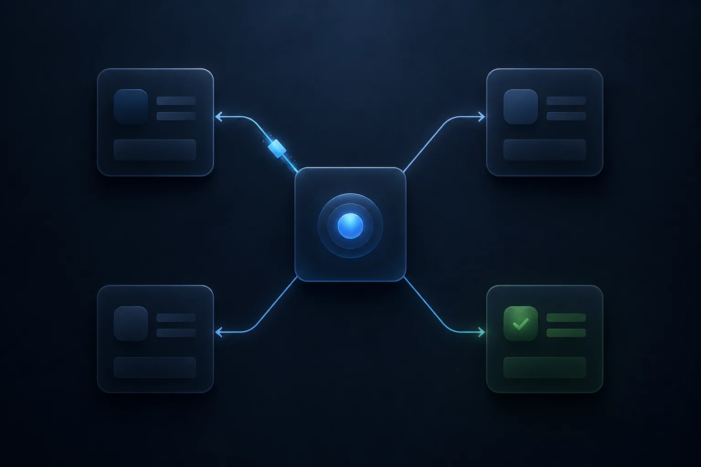
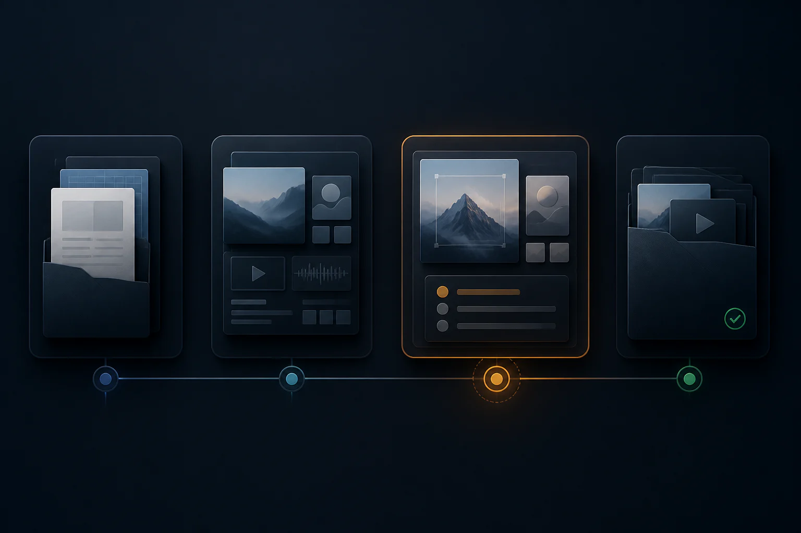

The promise and the next action do not match.
Visitors hesitate when the page cannot make one relevant decision feel clear and worthwhile.
Align the offerWe connect your landing page, lead capture, CRM, human qualification, booking, and follow-up—so every serious inquiry reaches the right person with the context needed to act.
We trace where the message, lead context, ownership, or follow-up breaks—from first click to first real conversation.
Visitors hesitate when the page cannot make one relevant decision feel clear and worthwhile.
Align the offerCampaign source, offer, need, and urgency disappear between the form and the CRM.
Preserve the contextOwnership, notifications, booking, and reminders become inconsistent manual tasks.
Automate the handoffFrom campaign intent to prepared conversation, each checkpoint keeps the information and ownership required for the next step.
Match the campaign promise and make one next action obvious.
Ask only what the team needs to prepare and prioritize.
Create the record, retain the source, and assign the right owner.
Review fit and choose the right next conversation before offering private booking.
Send the private invitation, reminders, alerts, and tasks the process requires.
Connected checkpointsCampaign → context → CRM → human review → approved follow-up.
Coordinated delivery layersLanding page, CRM, automation, and operations.
Accountable customer journeyA clear owner and next action at every stage.
This walkthrough shows how the page, lead context, CRM, and execution workflow support one focused business outcome.
Your review identifies what should be fixed first. We can solve one critical bottleneck or connect the complete customer journey.

Responsive landing pages, campaign-specific funnels, lead forms, tracking, and conversion-focused copy structure.

CRM setup, source tracking, tags, pipeline stages, human review, and private booking.

Internal alerts, approved follow-up emails, reminders, tasks, routing, and Google Sheets integrations.

Content and approval workflows, documentation, QA, reporting, and team handoff.
We define the real bottleneck first, then design and deliver the smallest connected system that solves it without adding unnecessary complexity.
Identify the goal, bottleneck, tools, missing context, and people responsible for the next action.
Choose the right page, CRM stages, review path, automation, and ownership before implementation.
Implement the page, lead capture, CRM, internal alerts, approved follow-up, and operating handoff.
Check the journey across devices, verify each handoff, document the system, and prepare the team to run it.
Leadership, technical delivery, operations, administration, and finance remain connected throughout the build.

We recommend the engagement only after reviewing your current journey, priorities, and implementation scope.
Best when a specific page, workflow, or handoff needs a production-ready fix.
Best when the funnel, CRM, booking, automation, and internal operations need to work as one system.
✓ Final scope and investment are confirmed only after a human review.
The review is designed to identify the most useful next step—not to force a rebuild or an automatic booking.
Not necessarily. We review the current journey first and preserve what already works. A focused repair may be the better first move.
Yes. We begin with your existing website, CRM, forms, booking flow, automations, and team process before recommending changes.
No. The MDS team reviews the context first. If the inquiry is a fit, the appropriate private booking invitation is sent afterward.
Focused builds include testing and a documented handoff. Ongoing optimization and systems support can be included when the reviewed scope requires it.
Share the page or workflow, what should happen next, and where the process becomes manual. The MDS team reviews your context before recommending scope.
After submitting: context received, pending human review. No calendar opens automatically.
Form not loading? Email the MDS team.
Submitting the form does not open a public calendar. The MDS team checks fit, urgency, and the right next conversation first.
Start with the real bottleneck. We will identify the smallest useful system that removes it and makes the next action easier to run.
Request a Free Funnel Review